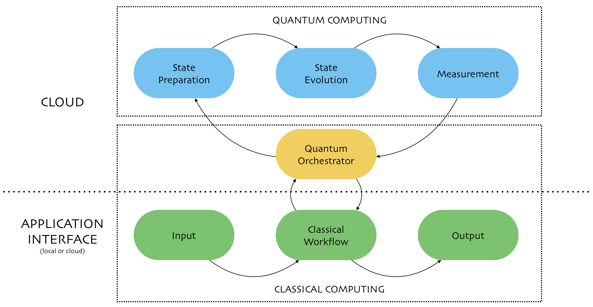

Quantum Computing
Hybrid computing
Quantum hype
- 💥 NISQ era
noisy intermediate-scale quantum computers - ⚠️ only QPUs
there are only quantum processors - no storage or memory, and they are severely limited in input and output - 🔬 specialized use cases
applicability will likely be limited to specialized uses cases where quantum algorithms can provide dramatic speedup

Q# and Azure Quantum
Azure Quantum Execution
// queue job
az quantum job submit --target-id {target}
// check job status
az quantum job show --job-id {id}
// fetch job output
az quantum job output --job-id {id}
Result Frequency
--------- ----------- ----------------------
[0,1,0,0] 0.60000000 |████████████ |
[0,0,1,0] 0.20000000 |████ |
[1,0,1,0] 0.20000000 |████ |
Azure Quantum Execution
Basic Theory
To simulate a molecule of penicillin we need
$10^{86}$ bits
which exceeds the amount of atoms in the universe

Qubit state can be visualized using a Bloch sphere, where $\ket{0}$ and $\ket{1}$ are vectors starting at the center and pointing to "north pole" and "south pole".

All other states are a linear combination of $\ket{0}$ and $\ket{1}$. This is a superposition.
$$\ket{\psi} = \alpha\ket{0} + \beta\ket{1}$$

Circuits
Deutsch's problem - given an unknown function
$f : \{0,1\} \rightarrow \{0,1\}$
determine if the function is constant or balanced
- $f_0$ is constant
- $f_1$ is constant
- $f_2$ is balanced
- $f_3$ is balanced
- $f_0(0) = f_0(1) = 0$
- $f_1(0) = f_1(1) = 1$
- $f_2(0) = 0 \;\;\; f_2(1) = 1$
- $f_3(0) = 1 \;\;\; f_3(1) = 0$
Classically, two function evaluations are needed.
After the first execution, we still cannot say if the function is balanced or constant.

Entanglement
But what if the control qubit was in a
superposition?
We call this
non-locality
It is based on the Bell's theorem from 1964.